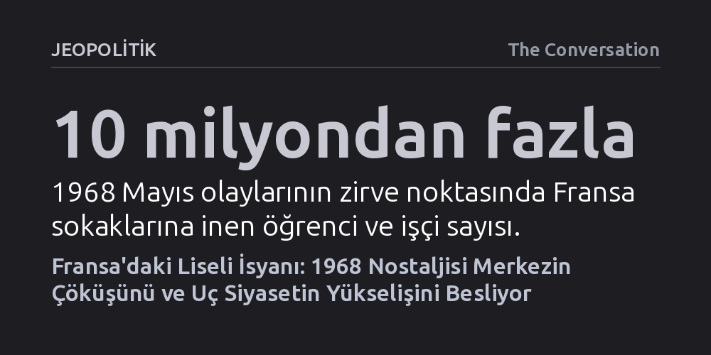

JEOPOLITIK · The Conversation · 2026-10-08
Fransa’da liselilerin başlattığı eylemler, 1968 nostaljisini canlandırarak siyasi merkezin aleyhine işliyor; krizden yalnızca aşırı sol ve aşırı sağ güç kazanıyor. Macron hükümetinin yetersizliği, 2027 seçimleri öncesinde iki uç siyasetin genç tabanı paylaşmasına yol açıyor.
Fransa’daki sokak hareketlerinin kendiliğinden bir sol uyanıştan ziyade, merkezin erimesiyle hem aşırı sol hem de aşırı sağın gençlik tabanını genişletmesine yaradığını gösteriyor.

Fransa genelinde son haftalarda liseleri ve sokakları saran protestolar, kamuoyunda derhal 1968 baharındaki tarihi başkaldırıyı akla getirdi. O dönem Nanterre kampüsünde yurt kurallarına tepkiyle başlayıp 10 milyondan fazla öğrenci ve işçinin katıldığı genel greve dönüşen hareket gibi, bugünkü dalga da görünürde oldukça yerel bir sorunla patlak verdi. Paris'in Saint-Denis banliyösündeki liseliler, yetersiz yalıtım, dökülen binalar ve yoksul bölgelerde aksayan ders saatleri yüzünden sokağa çıktı.
Kısa sürede tüm ülkeye yayılan hoşnutsuzluk, yalnızca fiziki altyapıyla sınırlı kalmadı. Gençler, lise sonrası yükseköğrenim ve mesleki eğitim başvurularını düzenleyen merkezi dijital sistemin karmaşıklığından ve geleceksizlik hissinden şikâyet ediyor. Tıpkı 1968'deki katı yurt yasaklarının gençliğin değişen hayat tarzıyla çatışması gibi, bugünkü teknik ve kurumsal aksaklıklar da Fransız gençliğinin genel bir sistem tıkanıklığına verdiği tepkiye dönüştü.
Sokaktaki gerilim tırmanırken devletin güvenlik aygıtı da 1968'deki sert reflekslerini hatırlatan bir tutum sergiledi. Göstericilere doğrudan göz yaşartıcı gaz sıkılması ve 15 yaşındaki bir lise öğrencisinin patlamamış bir mühimmatı yerden alırken elini kaybetmesi, polisin orantısız güç kullanımını tartışmaların merkezine oturttu. Olayın ardından ses bombalarının kullanımı yasaklansa da Başbakan Sébastien Lecornu'nün gençlerin endişelerini haklı bulurken polisi savunmaya çalışması, hükümetin yaşadığı sıkışmışlığı gözler önüne seriyor.
1968 krizinde General de Gaulle'ün durumu kontrol edemeyeceğini düşünerek ordudan güvence almak için Almanya'ya kadar gitmesi gibi, bugünün Beşinci Cumhuriyet yönetimi de ciddi bir meşruiyet kriziyle karşı karşıya. Ancak Cumhurbaşkanı Emmanuel Macron'un 2024 yazında Meclis'i feshederek erken seçime gitme kararı, arkasında kilitlenmiş bir parlamento bıraktı. Hem Macron'un tarihi dip seviyedeki popülaritesi hem de Gabriel Attal ve Édouard Philippe gibi ılımlı merkez adayların eğitimdeki gerilemeden sorumlu tutulması, iktidarın sokakla bağını tamamen kopardı.
Fransa'nın zengin sokak eylemleri geleneğinde siyasi partilerin bu krizlere yaklaşımı belirleyici olmuştur. 1968'de dönemin en büyük sol gücü olan Fransız Komünist Partisi öğrencileri burjuva olmakla suçlayıp süreci okumakta geç kalmıştı. Buna karşılık, Jean-Luc Mélenchon liderliğindeki Boyun Eğmeyen Fransa (LFI) hareketi bu kez tereddüt etmeden sokaklara indi. LFI milletvekilleri doğrudan polisle öğrencilerin arasına girerek gençlik hareketinin kalkanı rolünü üstlendi.
Sosyal medyayı ve dijital imkânları ustalıkla kullanan Mélenchon, eylemleri açıkça Mayıs 1968 ruhuyla ilişkilendiriyor. Göstericilerin taşıdığı pankartlarda popüler internet mizahlarına ve 1968 efsanesine yapılan göndermeler, aşırı solun gençlik öfkesini devrimci bir nostaljiyle konsolide ettiğini gösteriyor. Siyasi merkezin içine düştüğü derin sessizlik, sol popülizme gençlik tabanında rakipsiz bir hareket alanı kazandırıyor.
Sokaklarda esen nostalji rüzgârı yalnızca solun tekelinde değil. Marine Le Pen'in Ulusal Birlik partisi de genç seçmen üzerinde güçlü bir etki yaratıyor; ancak bunu sokak barikatları yerine ulusal hafızayı ve kimliği yeniden kurgulayarak yapıyor. Avrupa Birliği'nin ekonomik müdahalelerine karşı korumacı vaatler sunan aşırı sağ, Fransa'nın geçmişteki suçlarına dair yerleşik anlatıları reddederek alternatif bir gurur söylemi inşa ediyor.
Vichy rejimi dönemini ele alan son tartışmalar ve kültürel kutuplaşmalar, solun benimsediği ilerici söylemlerden rahatsızlık duyan gençleri Le Pen'in etrafında topluyor. 18-24 yaş grubunda yüksek oy oranlarını koruyan aşırı sağ, sokakta taş atan değil, sandıkta merkeze ceza kesmeye hazırlanan farklı bir gençlik kesimini temsil ediyor. Sonuç olarak, Fransa'da liselerden yükselen çığlık siyasi merkezin altını oymaya devam ederken 2027 başkanlık yarışını iki uç kutbun çatışmasına doğru sürüklüyor.